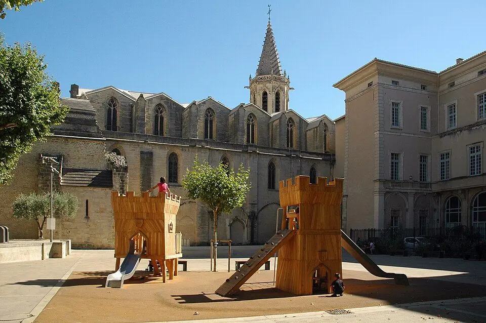
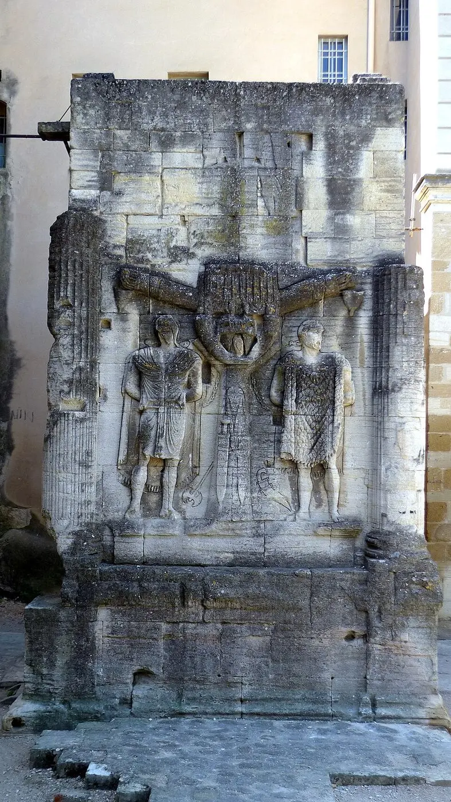
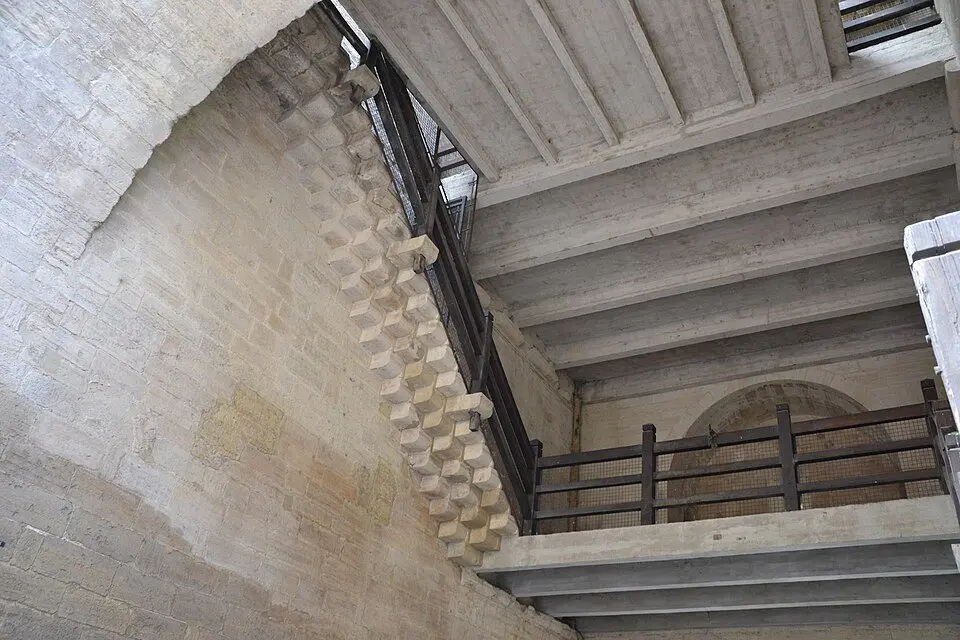
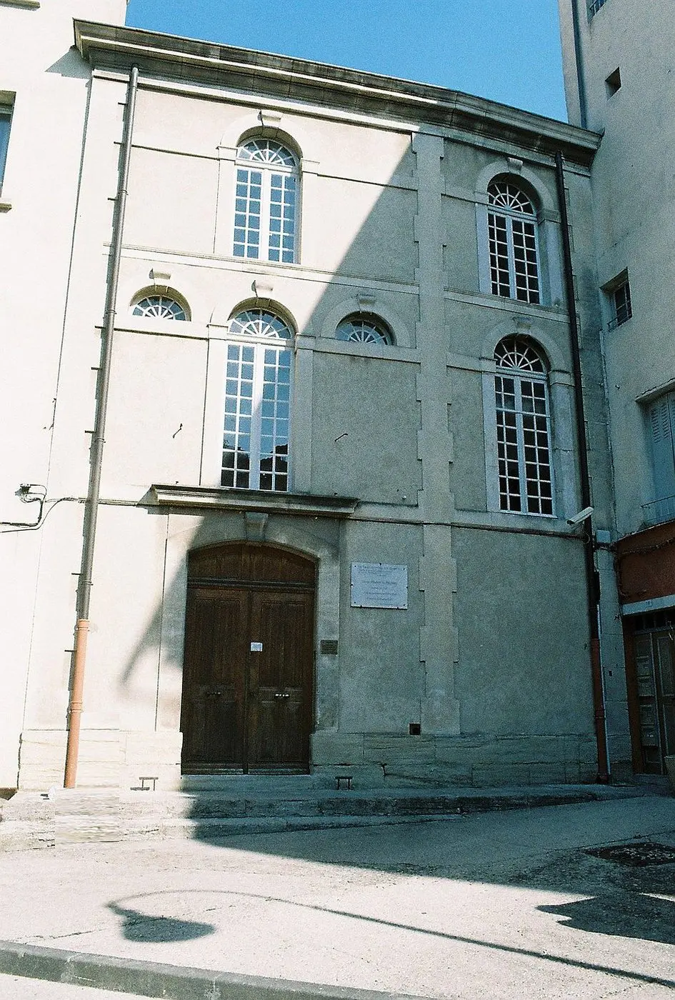
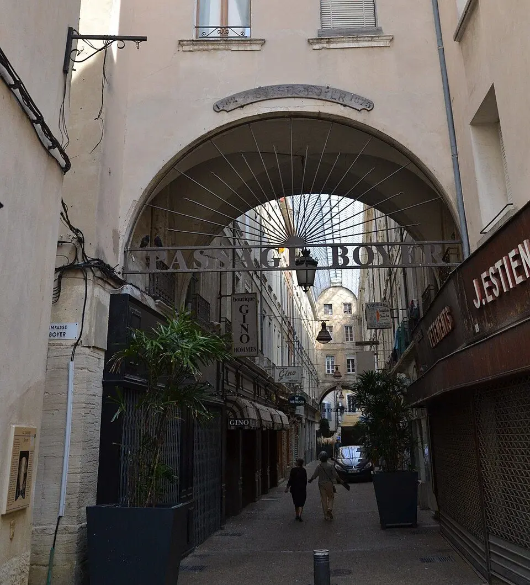
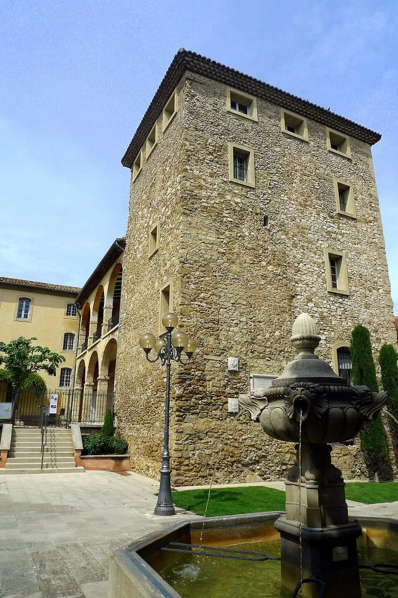

Carpentras a bien plus à offrir qu'on ne le pense. Capitale historique du Comtat Venaissin, la ville abrite un patrimoine exceptionnel : synagogue, arc romain, cathédrale médiévale, hôtels particuliers, passages couverts... Et quand la journée se termine, il reste encore beaucoup à faire. Voici 6 idées — avec à chaque fois la pizza qu'on vous conseille de commander en rentrant, livrée dès 17h30 ou prête à emporter au 209 Avenue Pierre Sémard.
6 Idées pour Votre Soirée à Carpentras
Idée n°1
Visiter le patrimoine du centre ancien
Carpentras mérite qu'on prenne le temps de s'y perdre. Le centre ancien se découvre à pied, plan en main : les anciens hôtels particuliers, la Cathédrale Saint-Siffrein, l'Arc de Triomphe romain, la Porte d'Orange du XIVe siècle, le Passage Boyer et ses boutiques, les nombreuses chapelles disséminées dans les ruelles... Sans oublier l'Inguimbertine, le grand musée de 1800 m² qui retrace l'histoire de Carpentras et du Comtat Venaissin à travers des collections archéologiques, bibliographiques et artistiques remarquables.
À ne pas manquer aussi : la plus ancienne synagogue de France en activité, à réserver à l'avance. Les parkings autour du centre sont gratuits, dont les zones bleues (1h30).

📍 Cathédrale Saint-Siffrein
📍 Arc de Triomphe romain
📍 Porte d'Orange (XIVe s.)
📍 Synagogue de Carpentras
📍 Passage Boyer
📍 Places du centre-villePhotos : Wikimedia Commons — CC BY-SA
Idée n°2
Le marché des producteurs du mardi soir
Chaque mardi en saison, de 17h à 19h, le marché des producteurs de Carpentras prend vie. Fruits, légumes, miel, fromages, herbes de Provence... C'est le rendez-vous des habitants qui font leurs courses en direct des producteurs locaux. Une belle façon de découvrir les saveurs du Vaucluse avant de rentrer dîner.
Et si vous passez un vendredi matin, ne ratez pas le grand marché hebdomadaire de Carpentras — l'un des plus importants de Provence, réputé notamment pour sa truffe noire en hiver et la fraise de Carpentras au printemps.
Photos : Wikimedia Commons — CC BY-SA
Idée n°3
Un apéro en terrasse sur les grandes places
Les grandes places de Carpentras, avec leurs fontaines et leurs monuments en toile de fond, sont faites pour s'attarder. Un café ou un verre entre amis, le soleil qui descend derrière le Ventoux, les fontaines qui murmurent... C'est une des grandes douceurs de vivre en Provence. En repartant, arrêtez-vous dans une boutique gourmande pour un berlingot de Carpentras ou des fruits confits — les spécialités locales incontournables.
Photo : Wikimedia Commons — CC BY-SA
Idée n°4
Une soirée ciné
Le cinéma reste la sortie soirée par excellence. Deux heures à se laisser emporter, puis retour à la maison — et là, la question se pose inévitablement : on mange quoi ? Commandez avant de partir, la pizza arrive à l'heure où vous rentrez.
Photo : Wikimedia Commons — CC BY-SA
Idée n°5
Une soirée foot ou jeux entre amis
Ligue des Champions, match, soirée Trivial Pursuit... Les soirs où on se retrouve à plusieurs, personne ne veut cuisiner. La pizza s'impose : elle arrive chaude, se partage facilement, et on n'a pas à quitter le canapé ou la table de jeu. Livraison gratuite dès 2 grandes pizzas à Carpentras — pour 4 personnes, c'est le seuil parfait.
Photo : Wikimedia Commons — CC BY-SA
Idée n°6
Promenade au coucher du soleil côté Ventoux
Le soir, depuis les hauteurs autour de Carpentras, la vue sur le Mont Ventoux et les Dentelles de Montmirail est saisissante. Une heure en direction de Bédoin, Flassan ou Mazan, et vous avez un panorama provençal qui n'appartient qu'à cette région. En rentrant, l'appétit est là.

Photos : Wikimedia Commons — CC BY-SA
Nos horaires pour ne pas rentrer le ventre vide
- Livraison à Carpentras : 7j/7 de 17h30 à 22h — gratuite dès 2 grandes pizzas
- À emporter : 209 Avenue Pierre Sémard, Carpentras — prête en quelques minutes
- Commande par téléphone : 07 61 08 36 08
- Zones de livraison : Carpentras, Mazan, Monteux, Pernes, Aubignan, Sarrians et alentours
Et si vous n'habitez pas Carpentras même ?
On livre aussi dans les communes voisines — Mazan, Monteux, Pernes-les-Fontaines, Aubignan, Sarrians... Consultez votre page commune pour les conditions de livraison.
Quelle que soit votre soirée, on s'occupe du repas.
Commander — 07 61 08 36 08